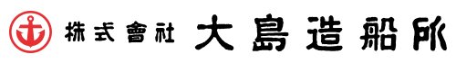
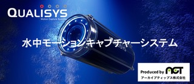
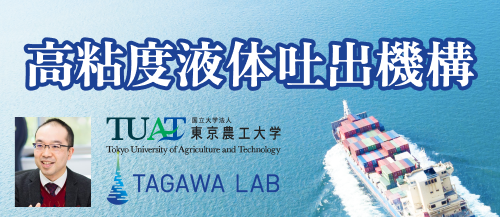
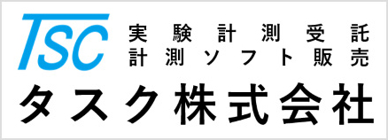
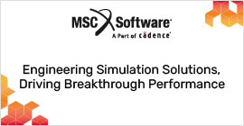
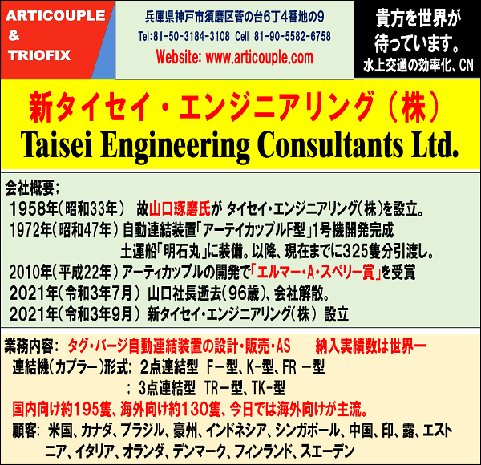

2026年 5月28日(木)・5月29日(金)
会場：東京海洋大学越中島キャンパス（東京都江東区）
令和8年春季講演会を東京海洋大学越中島キャンパスにて開催いたします。講演会は，今回から現地対面形式となり，オンデマンドによる見逃し配信を実施予定です。講演会は，一般講演と15件のオーガナイズドセッション（OS）のほか，初日には定時総会・表彰式，論文受賞記念講演，シップ・オブ・ザ・イヤーセッション，特別講演，学生・スポンサー交流イベント，若手研究者交流イベントを行います。また，若手研究者の研究奨励を目的に，本講演会の中で若手優秀講演賞を設けます。
さらに，産業界ニーズを受け，ノン・アカデミックな参加者に対しても技術情報等の交流を行う場として，OSの1カテゴリーとして交流セッション(Communication Session: CS)を設けました。今回は講演会企画委員会で企画する企画OS(POS)として実施しますが，秋季講演会からは広くテーマを募集を行い実施します。講演会が人的ネットワーク構築の場ともなり，参加に魅力ある場となることを目指して開催していきます。多くの皆様のご参加をお待ちしております。
| 開催日時 |
令和8年5月28日（木），5月29日（金） 見逃し配信：令和8年6月2日（火）～6月15日（月） |
|---|---|
| 会場 |
東京海洋大学越中島キャンパス+見逃し配信 受 付：越中島会館2階 ホワイエ 第 1 会場：越中島会館2階 講堂 第 2 会場：越中島会館2階 セミナー室3 第 3 会場：越中島会館2階 セミナー室4 第 4 会場：越中島会館2階 多目的教室 第 5 会場：越中島会館1階 集会室 第 6 会場：明治丸記念館 展示スペース2 |
| 日程表 | |||
|---|---|---|---|
| 日程 | 行事 | 時間 | 会場 |
| 5月28日（木） | 一般講演／OS |
9:00～12:00 15:40～17:20 |
第1~6会場 第2~6会場 |
| 定時総会 | 13:00～14:00 | 第1会場 | |
|
表彰式 |
14:00～14:30 |
第1会場 | |
|
論文賞受賞記念講演 |
14:30～15:30 |
第1会場 | |
|
シップ・オブ・ザ・イヤー セッション |
15:40～17:20 |
第1会場 | |
|
特別講演 |
17:30～18:10 |
第1会場 | |
|
学生・スポンサー 交流イベント |
12:00～14:00 |
明治丸記念館展示 スペース1 |
|
| スポンサー／企業展示 | 10:00～17:50 | ホワイエ | |
|
ランチョンセミナー |
12:00～13:00 |
各会場 | |
| 情報交流会 | 19:00～21:00 |
ホテル イースト21東京 ホールA |
|
| 5月29日（金） | 一般講演／OS | 9:00～17:00 | 第1~6会場 |
| スポンサー／企業展示 | 9:20～15:00 | ホワイエ | |
| ランチョンセミナー | 12:00～13:00 | 各会場 | |
|
若手社会人・学生 交流会 |
12:00～14:00 |
明治丸記念館展示 スペース1 |
|
| CPDポイント登録 | |
|---|---|
| イベント名 | 令和8年 春季講演会 |
| イベントID | 講演会受付にて配布 |
| ポイント数 |
発表3ポイント／件 講聴1ポイント／時間 |
| 備考 | 登録希望者は学会事務局へE-Mailで申請してください。 |
| 参加費：事前申込（申込開始日〜令和8年5月20日まで） | |||||
|---|---|---|---|---|---|
| 会員（正会員・学生会員）（※注1） | 非会員 | ||||
| 右記以外 | シニア会員 （※注2） |
終身会員（※注3） および 70歳以上の名誉・功労会員 |
OS講演者 | 左記以外 | |
| 一般 | 8,000円 | 4,000円 | 0円 | 8,000円 | 15,000円 |
| 学生 | 0円 | － | － | 8,000円 | 8,000円 |
| 参加費：当日受付（令和8年5月21日以降） | |||||
|---|---|---|---|---|---|
| 会員（正会員・学生会員）（※注1） | 非会員 | ||||
| 右記以外 | シニア会員 （※注2） |
終身会員（※注3） および 70歳以上の名誉・功労会員 |
OS講演者 | 左記以外 | |
| 一般 | 10,000円 | 6,000円 | 2,000円 | 10,000円 | 17,000円 |
| 学生（※注4） | 0円 | － | － | 8,000円 | 8,000円 |
| 講演論文 掲載料 | ||
|---|---|---|
| 資格／分類 | 会員 および OS講演者 |
非会員 |
| 一般 | 0円 | 10,000円 |
| 学生 | 0円 | 5,000円 |
| オーガナイズドセッション（OS） | |
|---|---|
| OS1 |
洋上風力発電施設水中部のモニタリング＆メンテナンス 平林 紳一郎(東京大学)・巻 俊弘(東京大学) |
| OS2 |
プロペラキャビテーションと船舶水中放射雑音の管理技術 金丸 崇(九州大学)・新川 大治朗(海上技術安全研究所)・酒井 政宏(大阪大学) |
| OS3 |
海事デジタルエンジニアリング 村山 英晶(東京大学)・安藤 英幸(MTI)・角田 領(MTI) |
| OS4 |
人材育成における大学間及び産学連携を考える 村山 英晶(東京大学)・濵田 邦裕(広島大学)・稗方 和夫(東京大学) |
| OS5 |
海洋工学におけるロバスト制御利用の検討 金子 達哉(海洋研究開発機構)・金盛 雄大(東京計器)・登尾 悠平(大阪大学)・新川 大治朗(海上技術安全研究所)・酒井 政宏(大阪大学) |
| OS6 |
波力発電の課題と展望 村井 基彦(横浜国立大学) |
| OS7 |
空気潤滑システムの高度化に向けて 川島 英幹(海上技術安全研究所) |
| OS8 |
海洋無人観測プラットフォームの新展開 巻 俊弘(東京大学)・横田 裕輔(東京大学)・井上 朝哉(海洋研究開発機構)・金 岡英(海上技術安全研究所)・二瓶 泰範(大阪公立大学) |
| OS9 |
次世代の自動運航と制御技術 澤田 涼平(海上技術安全研究所)・牧 敦生(大阪大学) |
| OS10 |
離着桟操縦運動を予測するための数学モデル 北川 泰士(海上技術安全研究所)・佐野 将昭(九州大学) |
| OS11 |
造船技術，文化の保存と活用 平山 次清(横浜国立大学)・長谷川 和彦(大阪大学)・山口 悟(九州大学) |
| OS12 |
船舶海洋工学分野におけるシステム同定技術と不確かさ 牧 敦生(大阪大学)・古川 芳孝(九州大学)・高見 朋希(神戸大学) |
| OS13 |
海洋産業AIプロフェッショナル育成卓越大学プログラム 増田 光弘(東京海洋大学)・竹縄 知之(東京海洋大学) |
| OS14 |
宇宙航空×船舶海洋 角 有司(JAXA)・和田 良太(東京大学) |
| OS15 |
DX最前線 -異業種のDXを知る- 杉本 義彦(商船三井) |
| 定時総会 | |
|---|---|
| 日時 | 令和8年5月28日(木) 13:00~14:00 |
| 場所 | 第1会場（越中島会館2階講堂） |
| 表彰式 | |
|---|---|
| 日時 | 令和8年5月28日(木) 14:00~14:30 |
| 場所 | 第1会場（越中島会館2階講堂） |
| 論文賞受賞記念講演 | |
|---|---|
| 日時 | 令和8年5月28日(木) 14:30~15:30 |
| 場所 | 第1会場（越中島会館2階講堂） |
| 講演者 | 日本船舶海洋工学会賞(論文賞)受賞者 |
| シップ・オブ・ザ・イヤーセッション | |
|---|---|
| 日時 | 令和8年5月28日(木) 15:40~17:20 |
| 場所 | 第1会場（越中島会館2階講堂） |
| 講演者 | シップ・オブ・ザ・イヤー受賞船関係者 |
| 特別講演 | |
|---|---|
| 日時 | 令和8年5月28日(木) 17:30~18:10 |
| 場所 | 第1会場（越中島会館2階講堂） |
| 講演者 |
清水 悦郎（東京海洋大学） |
| 若手優秀講演賞 | |
|---|---|
| 事前に若手優秀講演賞の審査対象（1人1論文）として応募された令和8年1月1日時点で30歳以下の講演者（OSでの講演を含む）による講演を対象にして，厳正な審査を行い，若手優秀講演賞を決定します。受賞者には，後日表彰を行うとともに，氏名・講演表題を学会誌に掲載いたします。 |
| 学生・スポンサー交流イベント | |
|---|---|
| 日時 | 令和8年5月28日(木) 12:00~14:00 |
| 場所 | 明治丸記念館展示スペース1 |
| スポンサー／企業展示 | |
|---|---|
| 日時 | 令和8年5月28日(木) 10:00~17:50，29日(金) 9:30~15:00 |
| 場所 | ホワイエ |
| ランチョンセミナー | |
|---|---|
| 日時 | 令和8年5月28日(木)，29日(金) 12:00~13:00 |
| 場所 | 各会場 |
| 若手社会人・学生交流会 | |
|---|---|
| 日時 | 令和8年5月29日(金) 12:00~14:00 |
| 場所 | 明治丸記念館展示スペース1 |
| スポンサー展示 | ||
|---|---|---|
| 日時 |
令和8年5月28日(木) 10:00~17:50 令和8年5月29日(金) 9:20~15:00 |
|
| 場所 | ホワイエ | |
| Platinumスポンサー | ||
|
|
|
|
| Goldスポンサー | ||
|
|
|
|
| Silverスポンサー | ||
|
 |
||
| 企業展示 | ||
|---|---|---|
| 日時 |
令和8年5月28日(木) 10:00~17:50 令和8年5月29日(金) 9:20~15:00 |
|
| 場所 | ホワイエ | |
| 出典企業 | ||
|
    |
 |
|
| 情報交流会 | |
|---|---|
| 日時 | 令和8年5月28日（木） 19:00～21:00 |
| 場所 |
ホテル イースト21東京（ホールA） 〒135-0016 東京都江東区東陽6丁目3-3 TEL 03-5683-5683（代表） |
| 参加費 |
期限までの申込み 7,000円（学生・終身会員および70歳以上の名誉・功労会員3,000円） 期限後の申込み 8,000円（学生・終身会員および70歳以上の名誉・功労会員4,000円） 当日申込み 9,000円（学生・終身会員および70歳以上の名誉・功労会員5,000円） ※ スポンサー協力により変更の可能性あり |
| 講演会場のご案内 |
|---|
|
東京海洋大学越中島キャンパス 〒135-8533 東京都江東区越中島2-1-6 TEL：03-5245-7300(代表) |
|
・JR線京葉線・武蔵野線 越中島駅(各駅停車のみ)から徒歩約2分 ・地下鉄東西線・大江戸線 門前仲町駅から徒歩約10分 ・地下鉄有楽町線・大江戸線 月島駅から徒歩約10分 |
| 情報交流会場のご案内 |
|---|
|
ホテル イースト21東京 〒135-0016 東京都江東区東陽6-3-3 TEL：03-5683-5683（代表）／ FAX：03-5683-5775（代表 |
|
・東京メトロ東西線「東陽町駅」1番出口から徒歩7分 ・講演会場からの送迎バスを手配する予定です。 |
| 主催・協賛 | |
|---|---|
| 主催 | 日本船舶海洋工学会 |
| 共催 | 日本マリンエンジニアリング学会 日本航海学会 |